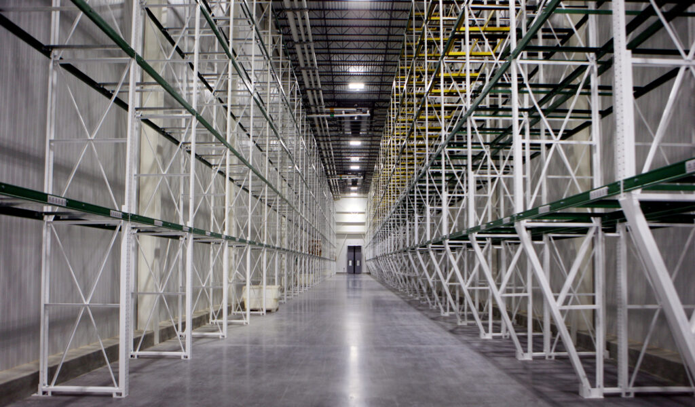
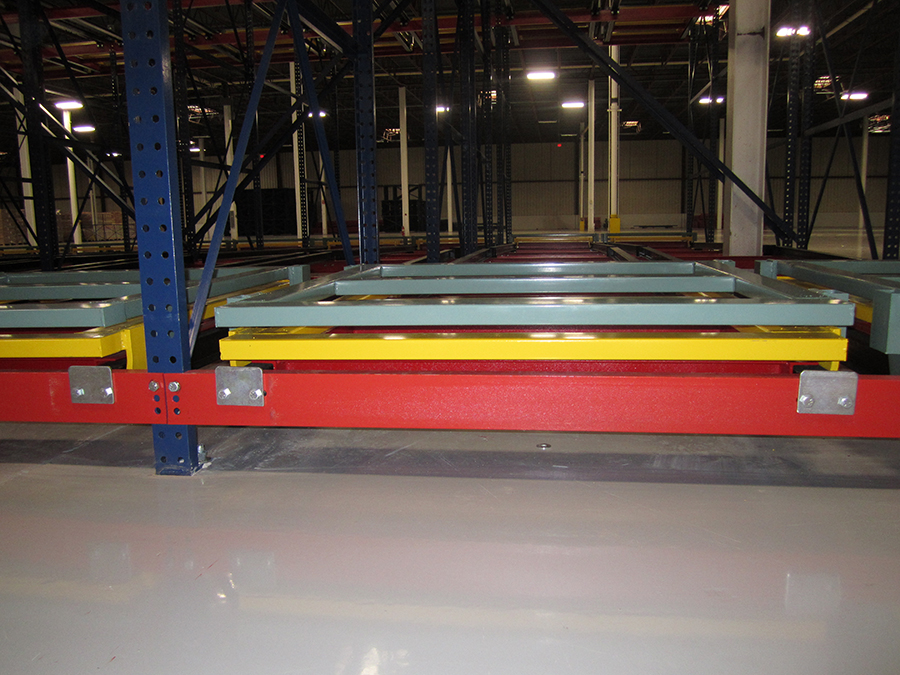
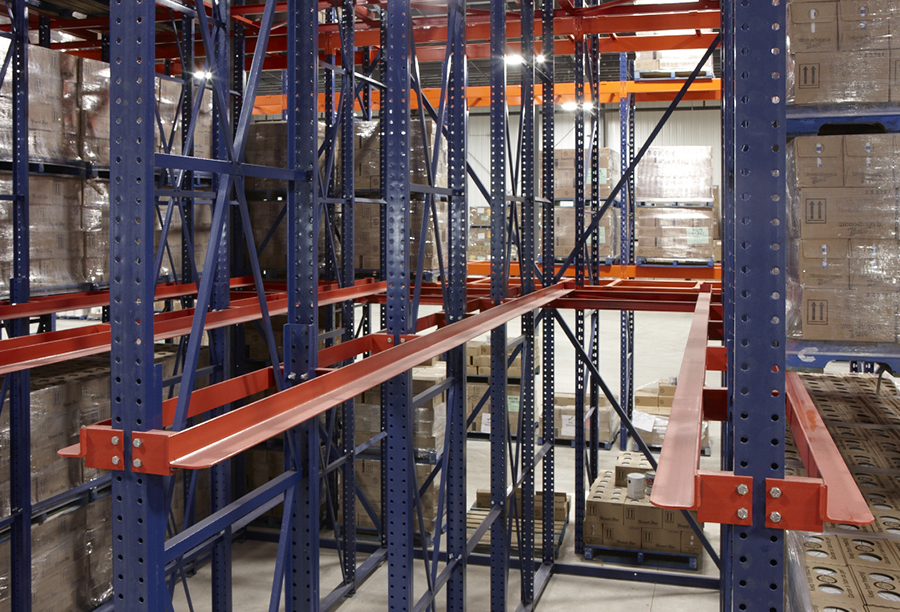
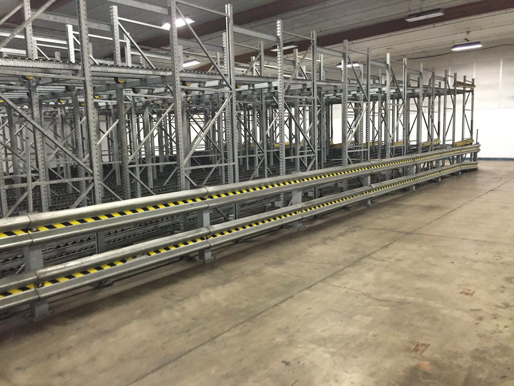
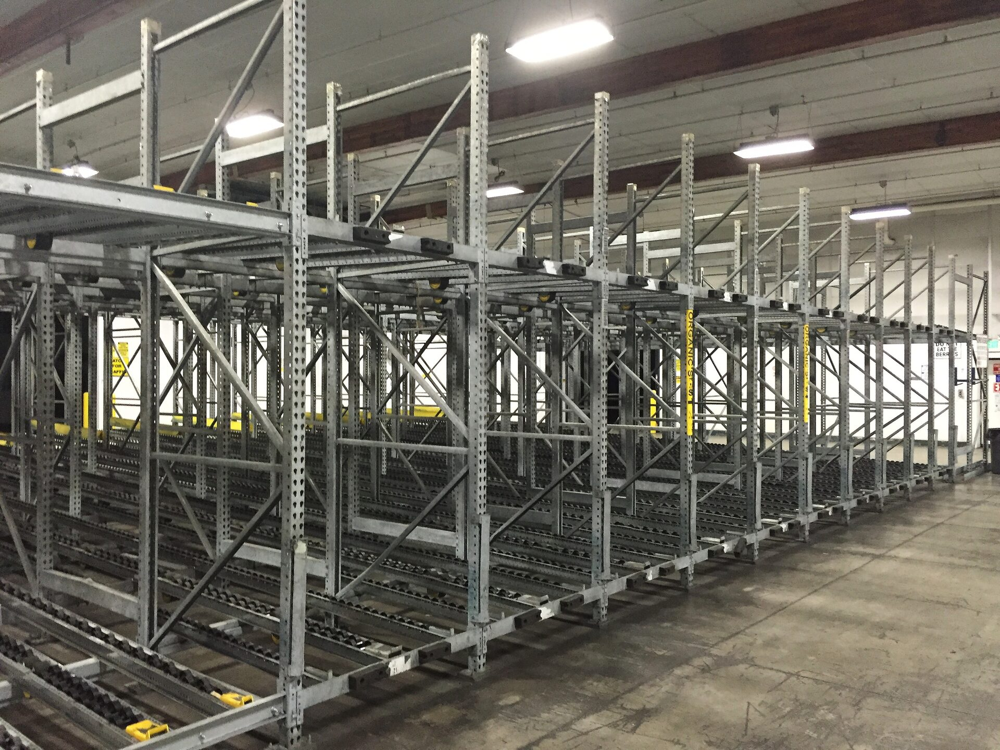
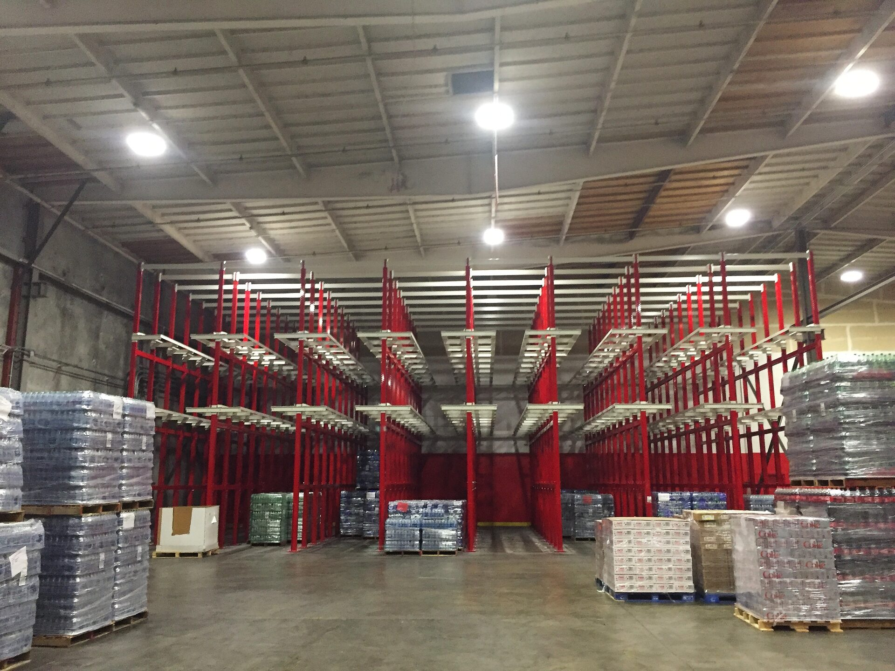
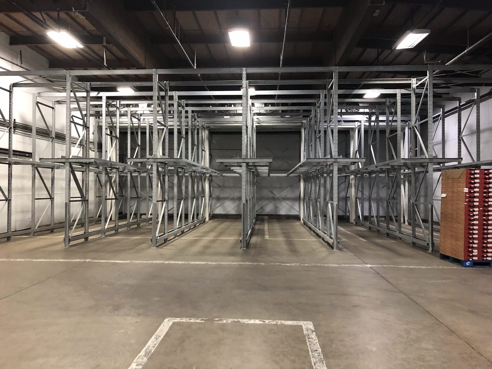
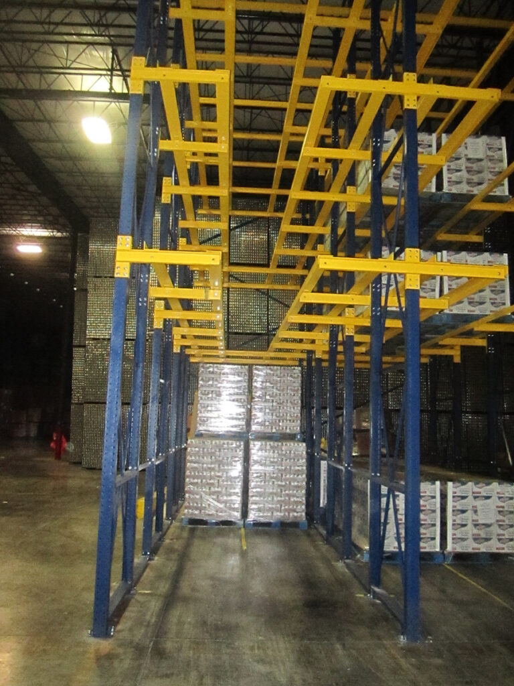

Rack Systems Sized to Fit the Way You Store
Get a denser, safer layout by matching your rack system to your inventory mix, throughput, equipment, and growth plans.
Start With a Storage Foundation That Fits
Pallet capacity alone doesn't make a storage system right for you—it also has to match how product actually enters, flows through, and exits your building.
Before recommending a system, we look at your inventory profile, picking method, throughput, available footprint, lift equipment, and safety needs, plus where you expect to be in a few years. Our relationships with Nucor Warehouse Systems, Advanced Storage Products, and Rack Builders Inc. (RBI) put each project in front of manufacturers with a proven track record.
What We Evaluate
- How many SKUs you carry, pallet sizing, and how fast inventory turns
- Rotation needs—FIFO, LIFO, batch picking, or order-based fulfillment
- Ceiling clearance, column layout, and usable floor space
- Lift equipment in use, aisle widths, and how traffic moves
- Seismic bracing, fire-code, and impact-protection requirements
- Where you're headed—expansion, automation, and capacity targets
The Right System Depends on the Work
No single rack type solves every problem—each is built for a different balance of density, access, and turnover. We help weigh capacity, accessibility, rotation, and cost before a layout is locked in.

Selective Pallet Rack
Because every pallet position is directly reachable, selective rack stays the most adaptable choice for wide SKU counts, shifting inventory, and operations that prioritize access over sheer density.
Best fit: broad SKU variety with frequent picks
Push-Back Rack
A system of nested carts or rollers lets you stack pallets several deep while loading and unloading stay at the aisle face—adding density without sending forklifts into the rack itself.
Best fit: multi-pallet SKUs on a last-in, first-out basis
Drive-In & Drive-Through Rack
Forklifts drive directly into the storage lane to reach more pallet positions per square foot. Drive-in suits LIFO workflows; drive-through opens both ends for FIFO access.
Best fit: dense storage for a narrow range of SKUs
Pallet Flow Rack
Pallets glide down gravity-fed lanes from the load side to the pick side, keeping replenishment and retrieval separate and rotation strictly first-in, first-out.
Best fit: high-velocity, date-sensitive product
Carton Flow Systems
Cartons feed forward to the pick face on their own while staff restock from behind, giving you a tight, organized setup built for quicker case and piece picking.
Best fit: high-volume, piece-level order picking
Cantilever Rack
With no front columns in the way, cantilever rack handles lumber, pipe, tubing, furniture, and other long or oddly shaped material that standard pallet rack can't accommodate.
Best fit: oversized or awkwardly shaped loads
Structural Rack Systems
Built from hot-rolled steel, this rack holds up under heavy loads, freezer conditions, and the kind of daily abuse that wears out lighter-duty systems.
Best fit: heavy loads and high-abuse environments
Custom Storage Solutions
When off-the-shelf rack won't cover it, we help design layouts that tie storage together with conveyors, mezzanines, safety systems, work platforms, and handling equipment.
Best fit: tight footprints or multi-system integrationFrom Facility Walkthrough to a Plan You Can Build
We stay manufacturer-neutral through the planning phase, so recommendations start from your operational needs rather than a product someone's already decided on.
Assess
Walk the facility and log inventory, workflows, equipment, constraints, safety risks, and where you're headed.
Compare
Weigh storage methods and manufacturers on capacity, accessibility, budget, and long-term cost.
Integrate
Fit the chosen system into material flow, safety infrastructure, installation timing, and future automation plans.
Ready for a Storage Layout That Actually Works?
Tell us what your warehouse needs to hold and move next, and we'll help you figure out where to start.